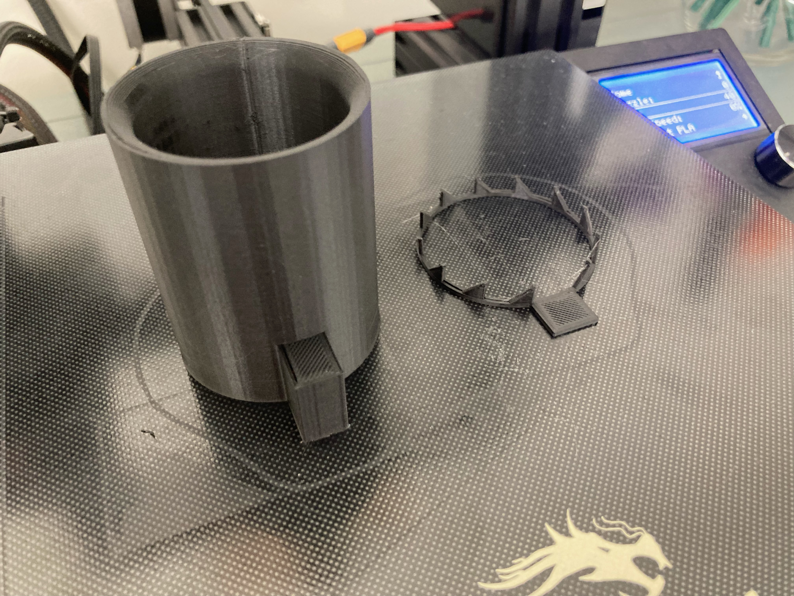

Ionic Thrusters

Ionic Thruster Version 1
An ionic thruster takes Electricty arcing through the air, to ionize the neutral air molecules, creating thrust. Verison 1 uses two double A batteries, a boost converter and parts from an old flashlight.
Ionic Thruster Version 2
Verison 2 of the Ionic Thruster attempts to use 4 double batteries. The boost converter couldnt handle that much power input so it blew instantly. It also had a convergent nozzle to try to compress the air a little.
Ionic Thruster Version 3
Version 3 works really well. The positive diode had points so the electricity was more centered. Creating more thrust.
Ionic Thruster Version 4
Version 4 was the same as version 3 but double the size. It was also 3d printed.